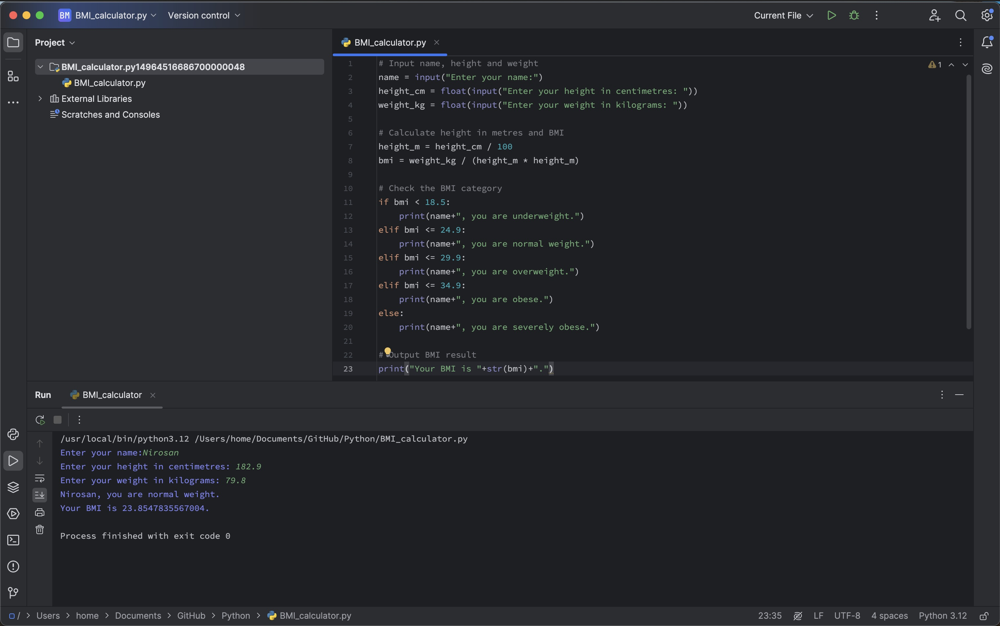

CONTROL FLOW -
BMI Calculator
GitHub File: Press Here
Overview:
This project demonstrates a simple Python-based BMI (Body Mass Index) calculator. It takes user inputs for height (in centimetres) and weight (in kilograms), calculates the BMI and provides feedback on the corresponding BMI category. It serves as an introductory project for Python programming, covering user input, conditional statements, and basic arithmetic operations.
Key Skills Used:
• User Input Handling
• Conditional Statements for BMI category evaluation
• Arithmetic Calculations to compute BMI
Code Description:
The code takes user inputs for name, height, and weight. It calculates BMI by converting height from centimetres to metres and using the formula: BMI = weight / (height * height). Based on the calculated BMI value, it categorises the user's weight as underweight, normal weight, overweight, obese, or severely obese according to the NHS classifications.
Why This Project is Worth Doing:
• This project introduces basic Python concepts such as user input, conditionals, and arithmetic.
• It demonstrates how to apply conditional logic to real-world scenarios, enhancing coding skills.
• Provides insight into handling data and performing calculations dynamically using Python.
Step-by-Step Guide for BMI Calculator:
- User Input: The program prompts for name, height, and weight.
- BMI Calculation: Converts height to metres and applies the BMI formula to determine the result.
- Conditionals: Uses
if-elifconditions to determine which BMI category the user falls into. - Final Output: Displays both the BMI value and the corresponding category.
Final Output Example:

CONCLUDING REMARKS
Working on this BMI Calculator project gave me hands-on experience with essential Python concepts like user input handling, conditional logic, and arithmetic operations. It strengthened my understanding of how to build interactive programs that process and analyse data based on user inputs. These skills are foundational for data analysis, where dynamically handling and calculating data is key to producing accurate results. This project also provided practical experience in applying logic-based conditions, a crucial component in automating decision-making processes, which directly translates into real-world data analysis tasks. The insights gained from this project will certainly help me in more complex Python-based analytical projects.